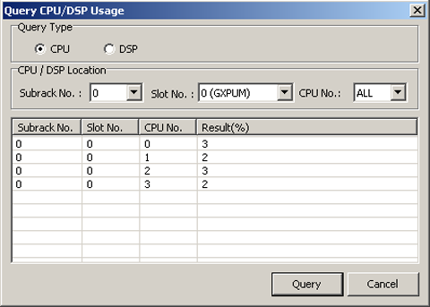

This describes how to query the CPU usage of all boards and the DSP usage of the GDPUC/GDPUX/GDPUP.
Prerequisites
- The LMT runs normally.
- The communication between the LMT and the BSC is normal.
- All the boards are functional.
Context
The CPU/DSP usage affects the quality of services. When the traffic volume is high, the CPU/DSP usage is also high. You can query the CPU/DSP usage to obtain the information about the current system load.
The method of querying the CPU usage is the same as that of querying the DSP usage. The example provided here is for querying the CPU usage.
Procedure
- Through GUI
- On the LMT, choose .
- Select CPU in the Query Type area, set parameters in the CPU/DSP Location area, and then click Query. The results are displayed, as shown in Figure 1.
Figure 1 Querying the CPU usage
- Through MML
- You can run the following commands on the Local Maintenance Terminal to query the CPU/DSP usage.
Copyright © Huawei Technologies Co., Ltd.